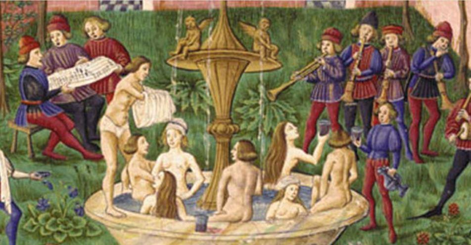
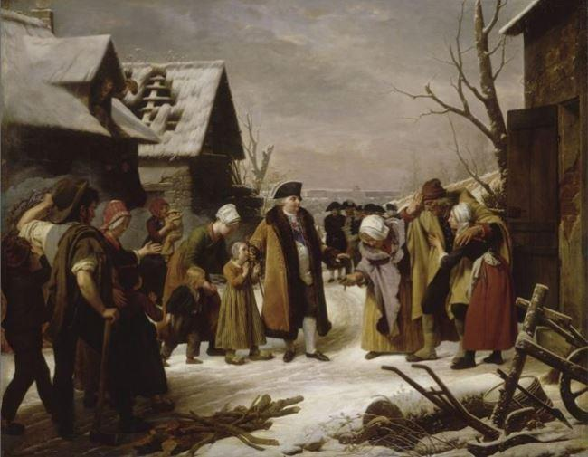

À n’en point douter, à l’échelle des temps notre époque se caractérise par une nouvelle venue qui s’appelle l’information. Ainsi, grâce aux moyens audiovisuels et autres les nouvelles peuvent-elles circuler à la vitesse de la lumière jusque dans n’importe quel endroit du monde, y compris le plus reculé. Dans la mesure où cela constitue un indéniable progrès, rien n’empêche toutefois d’y trouver aussi à peu près tout et n’importe quoi dont en particulier un efficace support de diffusion d’éléments n’ayant pas nécessairement qu’un caractère humaniste et désintéressé…
En particulier, il suffit de constater l’influence déterminante de ces mêmes moyens audiovisuels en ce qui concerne l’éducation, soit individuelle, soit au niveau des populations qui peuvent ainsi être orientées sans en avoir conscience vers tel ou tel choix sociétal, les individus étant alors persuadés du bien-fondé de ce qu’ils reçoivent ou simplement convaincus de son intérêt.
Partant de là, ils peuvent alors vivre d’illusions comme être entraînés sur un chemin qu’ils n’ont pas nécessairement souhaité d’autant plus que la civilisation, dite moderne, éloigne de plus en plus l’Être Humain de la nature qui reste pourtant son noyau originel et par là : sa première référence. Par conséquent, contrairement à ce que l’on pourrait estimer, en réalité le plus grand nombre possède ainsi de moins en moins de repères de jugement.
En ce qui concerne un élément déterminant pour sa vie harmonieuse sur Terre, à savoir le climat et son évolution, l’Homme moderne dispose ainsi à tout moment d’éléments divers et variés dont ceux concernant des intérêts qui éventuellement lui échapperaient.
Suivant cela, considérant ce qui est quasiment et journellement diffusé un peu partout, l’astre qui héberge l’Humanité serait soumis à un exceptionnel changement climatique qui l’affecterait crescendo depuis plusieurs décennies, prévoyant d’une manière certaine pour le cas où rien ne serait entrepris avec la plus extrême détermination, un désastre planétaire au sujet duquel les experts et autres spécialistes semblent rivaliser d’idées comme de certitudes.
C’est ainsi qu’en France, la transition énergétique, en particulier à travers de nombreuses taxes financières et autres obligations généralement fort dispendieuses dont on cherche toujours le bénéficie pour la planète, doit faire participer chacun à cette lutte sans merci contre les éléments.
Sans porter de jugement aussi bien quant à l’exactitude comme à la raison de ce changement climatique, il est néanmoins fort intéressant de porter son regard sur les temps passés à travers un document peu connu mais combien intéressant (1).
En observant ce qui suit, on constate que les éléments ci-dessous se rapportent tous à un espace de temps réduit, celui de la vie des personnages qui écrivirent ces observations, soit sur une douzaine de siècles, durée qui n’est déjà pas rien mais cependant très peu à l’échelle de la Terre.
Il ne faut donc pas en déduire des certitudes, tout au plus pouvons-nous faire un certain constat, lequel effectivement doit conduire le lecteur à s’interroger en conséquence. Il s’agit donc là d’une sage réflexion, effectivement nécessaire dans notre moderne et technologique époque.
Que cela nous apprend-il ? Extraits…
763 - 764
Hiver très rigoureux au cours duquel la mer fut gelée sur nos côtes. Dans l’intérieur de la Gaule, des froids extraordinaires furent signalés du début d’octobre 763 à la fin de février.
En certains endroits de notre pays, il serait tombé, au dire des historiens, jusqu’à 10 m de neige.
974 - 975
Dans les Gaules, l’hiver fut long, sec et dur, il se prolongea du début de novembre au 20 mars. En mai, il tomba encore beaucoup de neige.
1076-1077
D’après les témoignages des contemporains, l’un des hivers les plus rudes du XIè siècle. De très fortes gelées se produisirent du 1er novembre au 15 avril et le Rhin ainsi que le lac de Constance furent pris par les glaces de la Saint Martin (10 ou 11 novembre à cette époque) jusqu’à la fin mars.
« Cette année fut si étrangement froide que la plupart des arbres, des vignes et des fruitiers moururent, que les semences en furent intéressées et que la terre devint stérile pour les quelques années suivantes ».
1114-1115
Hiver terrible en Bretagne de même qu’en Angleterre.
« La mer gela dans la Manche à quelque distance des côtes et les pierres les plus grosses se fendirent avec éclat ».
1137
Sécheresse de 7 mois (mars à septembre) dans les régions septentrionales de la France (partie Nord du pays, au-delà de la Loire).
1183
Par suite de chaleurs torrides, les vendanges commencent dans l’Est de la France dès la fin de Juillet.
1224-1225
Hiver rigoureux depuis la St. Denis (9 octobre) jusqu’à la St. Marc (25 avril) avec fortes tempêtes ayant abattu en Normandie plusieurs clochers d’églises.
La sécheresse qui suivit dans le centre provoque une récolte de blé presque nulle et les fruits tombent avant maturité.
1232
La chaleur est si forte en Alsace que les œufs y cuisaient dans le sable.
1235-1236
Toutes les rivières furent prises par les glaces dont la débâcle entraîna la chute des ponts de Saumur et de Tours (qui étaient certainement en bois à cette époque).
Période de 1275 à 1277
Hiver très froid mais de courte durée avec d’abondantes chutes de neige dans l’Est. À Parme (Italie), le sol resta couvert de neige du mois de décembre 1275 au mois d’Avril 1276. L’été 1277 vit une sécheresse excessive dans le Nord et dans le Centre si bien que les puits se tarissent et les ruisseaux cessent de couler.
1288
Les pauvres mangent du blé nouveau dès le 10 juin et des potirons à la Ste. Marguerite (20 juillet). La vendange a lieu avant la fête de la Sainte Croix (14 septembre).
1297
À Colmar, les raisins sont mûrs à la Saint Dominique (4 août).
1303
Année exceptionnellement chaude et pluvieuse. La Seine, l’Oise et la Loire sont à sec. En Alsace, l’on voyait des raisins mûrs à la St. Jean (24 juin)
Période de 1314 à 1316
Treize semaines sans pluie dans l’Est du pays (plus de quatre mois). Les céréales se dessèchent et il en résulte une grande disette puis la peste. L’hiver se montra si rigoureux en France, en Allemagne et en Angleterre depuis le début de décembre 1315 jusqu’à Pâques 1316 qu’il provoqua une famine générale « On était obligé - lit-on dans l’Histoire d’Angleterre de Rapin Thoyra - de cacher les enfants avec un soin extrême si l’on ne voulait pas les exposer à être dérobés pour servir d’aliments aux larrons »
1322-1323
La partie occidentale de la mer Baltique fut couverte de glaces du début de février au 15 mars. En février, il tomba beaucoup de neige en France. Certains auteurs prétendent que la mer Adriatique fut également gelée.
1357-1358
Les contemporains affirment qu’il tomba au cours de cet hiver de prodigieuses quantités de neige comme l’on n’en avait jamais vues. Cela survint essentiellement en Italie, en Belgique et en Angleterre. En 1358, la chaleur est si forte dans l’Est que les raisins sont grillés dans les vignes.
1407-1408
En Angleterre, en Allemagne et en France, cet hiver fut l’un des plus rudes du Moyen Age. Il occasionna la destruction d’un nombre considérable d’arbres fruitiers et de vignes et se prolongea du 10 novembre au 31 janvier et du 15 février au 10 avril 1408. On lit dans les registres du parlement :
« La Saint Martin dernière passée, il y eut une telle froidure que nul ne pouvait besogner.
Le greffier même, bien qu’il eût près de lui du feu en une pellette pour empêcher l’encre de son cornet de geler, voyait l’encre se geler en sa plume de deux ou trois mots en trois mots et tant que enregistrer ne pouvait ».
Par ailleurs, Félibien écrit :
« Tous les analystes de ce temps là ont pris soin de remarquer que cet hiver fut le plus cruel qui eut été depuis plus de 500 ans. Il fut si long qu’il dura depuis la Saint Martin (10 ou 11 novembre à cette époque) jusqu’à la fin de janvier et si âpre que les racines des vignes et des arbres fruitiers gelèrent. Toutes les rivières étaient gelées et les voitures passaient sur celle de Sein (écriture d’époque) dans Paris. On y souffrait une grande nécessité de bois et de pain, tous les moulins de la rivière étant arrêtés et l’on serait mort de faim dans la ville sans quelques farines qui y furent apportées des pays voisins ».(2)
A Paris, pendant 70 jours les gelées atteignirent une intensité exceptionnelle.
« Le dimanche après l’Epiphanie (6 janvier), les gens allèrent ribber et chouller en traversant la Seine d’un côté à l’autre ».(3)
1420
Année très chaude en Lorraine où les fraises sont mûres dès le 19 avril, les cerises le 9 mai et les raisins le 18 juin puis dès le 22 juillet on boit du vin nouveau. (4)
1422
En région parisienne et en Champagne, on vendange à la fin d’Août.
1434-1435
Hiver très long appelé en Angleterre la grande gelée car il s’y prolongea du 24 novembre au 10 février.
« Dans le Nord, il neigea près de 40 jours consécutifs, la nuit comme le jour ».
De nombreux lacs et de nombreux fleuves furent gelés. Les plus lourdes voitures traversaient la Seine à Paris et la Moselle à Metz.
« L’eau qui coulait des linges mouillés placés devant le feu pour sécher, gelait en tombant ».
1457-1458
Du 20 novembre jusqu’à la fin de février, l’hiver se montra très rigoureux. De nombreuses rivières furent prises par les glaces et une armée de 40 000 hommes put camper sur le Danube congelé. Dans la région parisienne, la saison se termina par une abondance exceptionnelle de neige mais dès 1458, il ne tombe aucune pluie dans l’Est du pays d’avril à la mi-octobre.
Période de 1473 à 1479
Pour toutes ces années, les chaleurs de l’été sont mentionnées comme extraordinaires, terribles et intolérables. La sécheresse de 1473 dura plusieurs mois et suivant les historiens, s’étendit à toute la Terre. A Dijon, les vendanges eurent lieu dès le 20 août (5).
1483
Dans l’Est, l’été est tellement chaud que l’on y fait deux vendanges, la seconde après la Saint Rémy (15 janvier) (6).
1504
Dans l’Est et le Sud-Est, chaleur et sécheresse obligent de toutes les montagnes voisines à faire descendre le bétail boire dans le Rhône.Dans Lyon, on organise des processions blanches, ainsi appelées parce que les pèlerins qui y prenaient part étaient revêtus d’un linceul blanc.
1507-1508
Hiver rigoureux dans le Midi. Le jour de l’Epiphanie (6 janvier) il tomba près de 3 pieds de neige à Marseille (environ 1 m).
1534 et 1536
Dans le Sud-Est, les moulins s’arrêtent faute d’eau dans les rivières et la plupart des herbages et des vignes se trouvent grillés.
Chaleur et grande sécheresse en Bretagne durant tout le printemps et l’été. La plupart des fontaines tarissent et les grosses rivières deviennent de faibles ruisseaux.
Période de 1543 à 1545
« L’hiver fut si rigoureux en Bretagne que la plupart des plantes gelèrent jusqu’à la racine ».
Dans le Nord du pays, le froid fut si vif en décembre et au début de janvier qu’il fallait couper le vin dans les muids à coup de hache et le vendre au poids mais en 1545, grande sécheresse dans le Vendômois où pendant 7 mois, il n’y eut aucune pluie.
1554
Dans le Berry, furent faites plusieurs processions à cause de la sécheresse qui dura près de 7 mois.

1556
Grande sécheresse et fortes chaleur à peu près générales. Dans le Vendômois « la terre ne fut point trempée de Pâques jusqu’à la Toussaint, elle brûlait les pieds à ceux qui marchaient pieds nus ». Aucune pluie ne tombe de mars à novembre dans la Loire et d’avril à octobre dans le Cher. Dans ce dernier, on commence à moissonner dès la fin mai et à vendanger au début d’août.
1564-1565
A Paris, les grands froids durèrent de la fin décembre 1564 jusqu’au 20 mars 1565. Sur la Somme gelée « on établit des loges où il se vendait des vivres comme en plein marché ».
En Provence, les oliviers périrent en grand nombre et à Arles, le Rhône fut pris dans toute sa largeur. Partout, la neige tomba en abondance, en particulier dans l’Aude où les chutes se prolongèrent pendant plus de 8 jours et dans la Vendée où par places son épaisseur atteignait 6 pieds (environ 1.80 m).
1568-1569
En décembre 1568, toutes les rivières de France furent prises par les glaces. Le froid reprit ensuite en février, en mars et en Avril. En Vendée, les rigueurs de cet hiver s’y firent sentir « de Noël 1568 à la Saint Vincent 1569 (22 janvier) ». Devant Bordeaux : « la mer gela et la glace y était de la hauteur d’un homme ».
En Provence, de nombreux oliviers et figuiers furent tués par ces gelées. Le 19 décembre, les rigueurs de l’hiver obligèrent le duc d’Anjou à abandonner le siège de Loudun.
1594-1595
Hiver rigoureux du début de décembre jusqu’à la mi-janvier. Le froid reprit le 13 avril avec une intensité aussi grande qu’en décembre, ce qui occasionna à Paris beaucoup de morts subites, principalement chez les femmes et les petits enfants. A cette même date, de nombreuses hirondelles tombèrent mortes de froid. Toutes les rivières de l’Europe occidentale et centrale, de même que les lagunes de Venise, furent fortement prises.
1605
La sécheresse est telle d’avril à septembre que la plupart des rivières de France devinrent guéables (7).
1615-1616
En cet hiver, le roi Louis XIII revenait de Bordeaux où son mariage avait été célébré et se rendait à Paris avec sa nouvelle épouse. L’intensité du froid fut telle que dans le régiment des Gardes, composé de 3 000 hommes formant l’escorte royale, plus de 1 000 périrent au cours du voyage. Aussi, la Cour dut-elle s’arrêter à Tours car dit LE MERCURE FRANÇAIS :
« Le froid fit mourir tant de valets et serviteurs, des princes et seigneurs qu’ils furent contraints, étant à Tours, de faire maison neuve ».
Des historiens rapportent qu’en certains lieux de la Sarthe (8), l’épaisseur de la couche de neige atteignait la hauteur d’un homme.
A Paris, la Seine fut gelée du 1er au 30 janvier et lors de la débâcle, un côté du pont Saint Michel se trouva renversé (9).
1620-1621
Hiver très long avec gelées particulièrement rudes de la fin janvier à la fin février. En ce dernier mois, la mer fut prise par les glaces à Dunkerque. Le port de Calais fut gelé de même que l’Escaut. Les froids furent également très vifs en Provence et les glaces des lagunes de l’Adriatique emprisonnèrent la flotte vénitienne.
1637
Grande sécheresse d’avril à octobre dans le Centre et dans le Massif Central. On vendange dès le mois d’août à Bourges et à Orléans.
1665-1660
Il y eut deux séries de très fortes gelées, la première à la mi-janvier et la seconde en février.
« Cette froidure surpassa non seulement celle du grand hiver 1607 - 1608 mais aussi l’industrie et l’expérience des plus habiles éventeurs, puisqu’elle purifia le butin et les maisons des pestiférés et l’air corrompu de la ville incomparablement mieux qu’ils ne l’avaient fait avec leurs feux et leurs parfums ».
1662
Sécheresse dans tout le Nord. Dans le courant de juin, des prières publiques sont dites afin de réclamer la pluie.
1676
Aucune pluie ne tombe dans la Haute Marne entre le 15 février et le début novembre sauf une journée en juillet et une demi-journée en août.
1683-1687
Des froids rigoureux se firent sentir, surtout au mois de janvier 1684. Le long des côtes d’Angleterre, de Hollande et de France, la mer fut gelée sur une étendue de plusieurs milles au point que pendant plusieurs semaines, aucun bateau ne put sortir des ports ou y entrer. Sur la Tamise même, qui resta gelée du 23 décembre au 7 février, on installa une foire qui put subsister pendant une quinzaine. D’après les écrivains du temps, le tiers des habitants des campagnes voisines de Tours mourut de faim au cours de cet hiver. Dans le Midi, il tomba d’extraordinaires quantités de neige.
1691
A Paris, il ne tombe que 391 mm d’eau. Dans le Nord, l’été est remarquablement chaud.
1707
Les chaleurs sont si fortes dans l’Ouest « au temps des faucheries de foin que non seulement les personnes en meurent mais également les bêtes ». Le 19 juillet, « le coche de Paris à Orléans, c’est-à-dire ceux qui étaient dans le coche qui partirent ce matin-là d’Etampes, comptèrent 14 chevaux morts de chaleur sur le pavé jusqu’à Orléans ».
1708-1709
Le lundi 7 janvier commença une gelée qui dura jusqu’au 3 ou au 4 février.
Les blés gelèrent presque tous et les céréales manquèrent. A Paris, le prix du pain passa de 7 à 35 sous. La vigne disparut dans plusieurs régions de France et de nombreux arbres furent gelés jusqu’à l’aubier. Du 10 au 21 janvier, la température se maintint à Paris aux environs de -20° avec des minima de -23 les 13 et 14 janvier. Le thermomètre baissa jusqu’à -16° à Montpellier et -15.5° à Marseille. (10)
Période de 1717 à 1719
En 1718, il ne tomba pas une seule goutte d’eau à Paris pendant 5 mois. Dans l’Est, le chasselas était mûr le 24 juillet. 1719 fut l’une des années les plus chaudes et les plus sèches que l’on ait vues encore en France.
Dans le Centre « pas de pluie du 25 mars au 1er novembre, sauf un orage le 24 juillet. Les chaleurs sont excessives et provoquent de nombreux morts par flux de sang ».
1728-1729
Hiver long et rude, en particulier du 24 décembre au 22 janvier puis du début de mars à la mi-avril. En Poitou, l’encre gelait dans les plumes, même dans les pièces chauffées. En Provence, les oliviers périrent. A Paris, le thermomètre s’abaissa jusqu’à -5° et le mois d’avril fut marqué par de fortes chutes de neige. (11)
1739-1740
« Le nom d’année du grand hiver est devenu propre à 1709 - Ecrivait Réaumur dans les MEMOIRES DE L’ACADEMIE DES SCIENCES - celui d’année du long hiver est dû à aussi bon titre à 1740 ».
En France, la saison froide dura du mois d’octobre 1739 jusqu’à mars 1740 mais la neige tomba en beaucoup plus grande abondance en janvier et en février. Grâce à cette dernière circonstance, les blés se trouvèrent protégés et au début de juin, ils présentaient une magnifique apparence.
Malheureusement, la récolte fut compromise par les froids pluvieux de l’été 1740 qui présenta une température si basse pour la saison que l’on put écrire que dans la région parisienne « il avait gelé en 1740 pendant tous les mois de l’année ».
1742-1743
Sécheresse en Bretagne et dans le bassin de la Seine et en 1743, cette sécheresse s’étend à une grande partie de l’Europe.
1757 à 1785
Étés très chauds durant lesquels l’on relève jusqu’à 37°5 à Paris les 14 et 20 juillet 1757. En 1719, les eaux de la Seine sont 27 cm plus basses qu’en 1719, pourtant considérée jusque-là comme une année record.
Période de 1762 à 1785
En Bretagne, le blé noir est détruit par la sécheresse. En 1772, dans le Midi de la France, les maïs furent récoltés sans pluie, soit environ 6 mois de sécheresse. Le début de l’été 1783 est caractérisé par « des brouillards secs qui n’occasionnent pas de pluie », qui disparaissent fin juillet et que certains considèrent comme une suite des tremblements de terre de Sicile et de Calabre. La sécheresse se prolonge pratiquement jusqu’en décembre.
Pour 1785, la sécheresse est générale dans toute la France.
En Bretagne, aucune pluie n’est enregistrée entre la Toussaint (1er novembre) et la Ste. Madeleine en 1785 (22 juillet) soit pratiquement 9 mois !
Dans de nombreuses régions de France, par manque de foin, les paysans abandonnent leurs animaux et dans l’Ain, on nourrit les ânes avec des sarments de vigne.
1775-1776
« L’embouchure de la Seine, sur une largeur de 8 000 m se montra du 29 janvier 1776 et les jours suivants, toute couverte de glace ainsi que cette partie de la mer comprise entre la baie de Caen et le Cap de la Hève en sorte que du Havre, elle paraissait couverte de glace jusqu’à l’horizon. Cette glace était rompue par le flux et le reflux, ce qui donnait à notre mer l’apparence de la Baltique ».
1783-1784
Le 30 décembre 1783, le thermomètre s’abaissa jusqu’à -19° à Paris et dans la capitale, l’on enregistra 69 jours consécutifs de gelée. La terre fut gelée jusqu’à 65 cm de profondeur.
1788-1789
L’Europe entière subit les rigueurs de cet hiver, principalement de fin novembre 1788 à mi-janvier 1789 et à Paris, la Seine fut gelée du 26 novembre au 20 janvier suivant.
L’on compta 56 jours de gelée avec un minimum absolu de -21,8° le 31 décembre 1788.
Le Rhône, la Garonne et même le Rhin, la Tamise, le lac Léman furent pris en glace. À Marseille, les bords du bassin étaient couverts de glace.
Le 14 mai 1788, le conseil de la ville de Montauban décide d’écrire à l’évêque pour lui demander d’ordonner des prières publiques « afin d’obtenir du ciel la cessation de l’affreuse sécheresse qui règne depuis longtemps et expose les fruits de la terre aux plus grands dangers ».

Louis XVI distribuant des aumônes aux pauvres de Versailles pendant l’hiver de 1788
Note personnelle : Comme quoi, l’on peut être révolutionnaire et le moment venu suivant les circonstances, se souvenir de ceux qui pourraient éventuellement rendre service… Mieux vaut ne pas tous les fusiller, sait-on jamais…
1790
L’été et l’automne sont tellement secs que le vin « est-il d’une cherté horrible, sans doute par une attention de la Providence qui a, par cette privation, arrêté et empêché une partie des excès et des atrocités auxquels se seraient portés les têtes déjà exaltées par un patriotisme mal entendu, si cette effervescence de l’esprit se fut jointe à la frénésie bacchique » Tiens donc !
Période de 1793 à 1793
38°4 sont relevés à Paris le 8 juillet où il ne tombe que 331 mm d’eau durant toute l’année.
Deux périodes de gelées intenses. La première de mi-décembre à fin janvier et la seconde de mi-février à fin mars.
A Paris, il y eut 42 jours consécutifs de gelée et le 23 janvier le thermomètre descendit à -23°5.
C’est au cours de cet hiver que la cavalerie de Pichegru s’empara de la flotte hollandaise bloquée par les glaces dans le Zuyderzée. « Le Zuyderzée était gelé - Raconte Thiers - nos escadrons traversèrent au galop ces plaines de glace. L’on vit des hussards et des artilleurs à cheval sommer comme une place forte ces vaisseaux devenus immobiles et qui se rendirent à ces assaillants d’une espèce si nouvelle ».
1803-1805
En 1803, à Paris la Seine descendit plus bas de 27 cm qu’en 1719. A Viviers, en Ardèche, il ne tomba que 20 mm d’eau en juin, juillet et août pour 180 mm habituellement.
1819-1820
Périodes de froid très intense au début décembre, en janvier, au début de février puis durant une partie du mois de mars.
La Seine, le Rhône, la Saône et la Garonne furent prises en glace. Les vignes du Midi souffrirent beaucoup et les orangers de la région de Nice périrent.
1822
Sécheresse générale dans toute l’Europe de l’Ouest.
1829-1830
Cet hiver et celui de 1879 - 1880 furent les deux plus rigoureux du XIXè siècle. Il débuta à la mi-novembre dans toute l’Europe et se prolongea jusqu’à fin février. Le Languedoc et la Provence subirent d’importantes chutes de neige au sein de laquelle de nombreux voituriers disparurent. En Normandie, sa hauteur dépassait 2 m. La totalité des fleuves de France fut gelée. Le 28 décembre, l’on enregistra -10° à Marseille, -15° à Toulouse le 29 décembre, -17° le 17 janvier à Paris et -28° le 3 février à Mulhouse.
Période 1840 à 1842
Deux périodes de fortes gelées. Le 15 décembre 1840, jour du retour à Paris des cendres de Napoléon 1er, de nombreuses personnes furent victimes du froid. Le même jour, trois convois du chemin de fer de Mulhouse à Thann durent s’arrêter car l’eau était complètement gelée dans les locomotives.
Le 18 août 1842 la température atteint 37°2 à Paris où il ne tombe que 393 mm d’eau durant toute l’année.
1844-1845
Hiver extraordinairement neigeux dans les Ardennes et le Jura. Dans le Midi de la France, les routes étaient encombrées par la neige et il en était de même en Espagne et sur les montagnes du Maroc, près de Tétouan (Nord Maroc).
Période de 1757 à 1785
Quasiment, tous les étés sont très chauds et accompagnés de grandes sécheresses. En 1762, en Bretagne, la récolte de blé noir est détruite. En 1859 dans toute la France, le mois de juillet est celui qui enregistra la plus forte moyenne thermique de tout le 19è siècle, soit : 36 ° à Paris, à Tours et à Lyon, 37° à Marseille et 41° à Montpellier. En 1870-1871, c’est dans le Midi de la France que l’hiver fit sentir ses effets les plus intenses alors que dans la région parisienne le thermomètre ne s’abaissait guère en-dessous de -12°. Ainsi, l’on nota -19° à Marseille, -17° à Bordeaux et -23° à Périgueux.
Pour 1879 et 1801, à la date de ce mémoire, il convient de noter qu’il s’agit là de l’hiver le plus froid que l’on ait connu depuis les premiers relevés effectués grâce à l’invention du thermomètre par Réaumur.
Le 3 décembre, la température affichait -14° à Paris puis -25°6 le 10 du même mois. Le 17 elle était encore de -21°6 et le 27 décembre, de -17°7, la couche de glace sur la Seine dépassait 30 cm. Au même moment, l’on indiquait -28° à Orléans, -30° aux environs de Nancy et -33° à Langres alors que le Midi de la France n’était pas concerné par cette vague de froid.
Quant au mois de mars qui marqua la fin de cet hiver, il fut particulièrement doux avec une température d’environ 4° supérieure à la moyenne observée.
Durant 1881, très fortes chaleurs, en particulier dans le Nord, le Centre, l’Est et le Sud, soit : 35° à Lille, 38°4 à Paris, 38°7 à Nantes, 40°5 à Toulouse et 41° à Montpellier.
Période 1890 à 1892
Cet hiver fut peu neigeux ce qui conduisit à la destruction des semences qui ainsi ne furent pas protégées des gelées. Le phénomène fut accentué par une brusque chute de température qui passa à Paris de +10°5 le 24 novembre à -15° dès le 28 puis par les gels et les dégels successifs en février et en mars. Les vers blancs résistèrent car l’on en retrouva gelés à 10 cm de profondeur mais qui reprirent leur vitalité une fois réchauffés.
Dans le Nord de la France, la couche gelée atteint 85 à 90 cm de profondeur.
Au cours de cet hiver, le thermomètre descendit à -8°5 à Perpignan, -17°5 à Digne, -35° au Pic du Midi et dans la région de Montpellier, de nombreuses souches de vignes éclatèrent. La neige tomba abondamment en Algérie vers le 20 janvier et l’on enregistra même -13° à Sétif. Durant ce temps, l’Islande et l’Amérique septentrionale jouissaient d’un hiver exceptionnellement doux. Fortes gelées quasiment tout le mois de janvier avec les minima suivants : -10° à Montpellier et à Toulouse, -11° à Nantes, -12° à Agen et à Le Mans, -14° à Montauban et à St. Lô, -17° à Tulle et à Paris, -18° à Blois et à Auxerre, -19° à Bourges et à Melun, -21° à Lyon et à Vesoul, -26° à Chaumont et à Limoges, -27° au Puy en Velay, -31° à Auberive (Hte. Marne) où la terre fut gelée jusqu’à 90 cm de profondeur. En 1892, dans le Centre et le Sud-Ouest, les températures maximales relevées en août dépassent en général 40°.
Période de 1904 à 1913
Grande sécheresse dans le Midi, le Rhône inférieur et l’Ardèche. En 1921 et 1923, sécheresse sans précédent dans le bassin de la Seine, de la Loire inférieure et dans l’Est. Le débit des rivières alpestres est réduit à des valeurs jamais vues. 1923 sera une année de températures record au mois d’août dans le Centre, le Sud et le Sud-Ouest de la France : 40°3 à Clermont Ferrand, 40°5 à Cahors, 41°1 à Bourges, 41°4 à Angoulême, 41°6 à Nîmes, 42°2 à Châteauroux et à Carcassonne, 43° à Castres et 44° à Toulouse.
1928-1929
Sur la partie Nord de la France, les gelées furent quasiment continues durant tout le mois de janvier. Des congélations locales furent relevées sur le Danube, l’Elbe, le Rhin (70 cm à Mannheim), le canal de Kiel, la mer baltique.
Ce fut également le cas de certains lacs italiens, de la lagune de Venise, du lac de Constance, du lac de Genève et d’à peu près toutes les rivières de la partie Nord de la France y compris la Loire.
1938-1939
Hiver aux températures nettement supérieures à la normale. Cependant, l’on notera une très forte variation dans les régions de l’Est et de l’Ouest ainsi que dans la partie septentrionale du Sud-Est et du Sud-Ouest. Ainsi, Lyon passa de +10° le 12 décembre à -25° le 22 du même mois.
Période de 1939 à 1942
Les températures de Dijon et de Nancy passent respectivement de -2°2 et -6°8 à -20°4 et -20°3 en 24 heures. Durant l’hiver 1940-1941, ce fut le Midi de la France qui sera le plus affecté par de fortes gelées, soit -19°4 à Lyon et -12°8 à Marseille où les rues restèrent 6 jours consécutifs sous la neige.
En 1942, à Paris, on note 33 jours consécutifs de gelées ce qui place cet hiver au second rang depuis celui de 1917.
1945
De février à décembre inclus, tous les mois de cette année ont présenté dans la moitié Nord de la France, des températures moyennes généralement très supérieures à la normale et une importante sécheresse a caractérisé cette année. Les températures moyennes de juin ont dépassé de 2 à 3° la normale. Ce même mois, il fut relevé 42° à Montpellier…
(fin de la première partie – suite dans le prochain numéro de « Méthode »)
J-M. T.
Notes :
(1) Mémorial de la Météorologie Nationale. Par J. Sanson sous la direction de M. A. Viaut, directeur de la météorologie nationale. Edition 1945.
(2) Ce qui montre qu’à cette époque on circulait et l’on échangeait déjà beaucoup entre pays ou contrées voisines, ceci malgré la froidure.
(3) Ribber : se débaucher, s’en aller en goguette, folâtrer, voire ripailler. Chouller : jouer à la choule (choulle, soule, etc.) qui est un jeu de ballon fabriqué de cuir et de chiffon. Comme quoi, à cette époque on savait aussi s’amuser sans pour autant faire appel à des choses compliquées.
(4) L’on voit que le terme n’est lui, pas nouveau… et que la publicité actuelle n’a rien inventé.
(5) On soupçonne les conséquences d’une puissante éruption volcanique.
(6) Remarquons qu’une pratique courante de vinification particulière consiste à laisser passer les premières gelées sur du raisin, volontairement toujours sur pieds.
(7) Pouvant être traversées à gué.
(8) Afin de simplifier les choses, la localisation des différents événements se rapporte au découpage administratif actuel du territoire. N’oublions pas que la France de cette époque n’était pas la France d’aujourd’hui.
(9) A cette époque, les ponts étaient généralement en bois si bien que les glaces les ont endommagés. C’est ce qui explique qu’ils seront par la suite reconstruits en pierres.
(10) Nous voyons pour la première fois apparaître des relevés de température grâce à l’invention du thermomètre par Réaumur, né en 1683 à La Rochelle et décédé en 1757 à St. Julien du Terroux. Ceci constitue, bien entendu, un événement important car il donne ainsi une base de référence aux différents phénomènes rencontrés et ôte une partie de commentaires relevant du suggestif.
(11) Les températures sont toujours relevées sous abri et non sous une quelconque exposition au soleil ou à la lumière directe du jour, ce qui ne signifierait rien.

Partager cette page